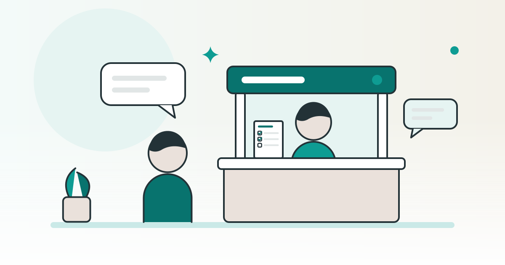

SHOPKIT コラム
ネットショップ開業はどこに相談する？無料の公的な窓口と相談の準備

ネットショップを始めてみたいけれど、誰に何を聞けばよいのか分からない。そんなときは、聞きたいことを「お店づくり」「税の手続き」「契約の困りごと」に分けると、相談先を選びやすくなります。無料で話を聞いてもらえる公的な窓口と、相談の前に用意しておくメモをまとめました。
この記事は、完成品のネットショップを販売している SHOPKIT が書いています。
ネットショップ開業の相談は、聞きたいことで窓口を分ける
ネットショップの開業には、お店の計画、税の手続き、契約や支払いなど、性質の違う悩みが混ざります。1か所で全部を聞こうとすると、その窓口では答えられない質問が出てきます。まず、いちばん聞きたいことがどの種類かを決めましょう。
下の表は、この記事で紹介する公的な窓口を、聞きたいことごとに並べたものです。窓口の役割は、それぞれの公式の案内（2026年10月19日に確認）をもとにしています。
| 聞きたいこと | 相談先 | 案内しているところ |
|---|---|---|
| お店の計画や売り方、続け方など、経営のこと | よろず支援拠点（各都道府県）、商工会・商工会議所 | 中小企業基盤整備機構（よろず支援拠点全国本部・J-Net21） |
| 開業届や所得税など、国の税のこと | 税務署、国税局の電話相談センター | 国税庁 |
| 個人住民税や事業税など、地方の税のこと | 市区町村、都道府県の税事務所など | 国税庁（国税の相談の案内） |
| 契約や支払いのことで困ったとき | 地域の消費生活センターなど（188 で案内） | 消費者庁 |
どの窓口も、自分の代わりにお店のことを決めてくれる場所ではありません。話を聞いてもらい、自分で決めるための材料を集める場所と考えると、使い方がはっきりします。
お店づくりや経営の悩みを聞いてもらえる、よろず支援拠点
よろず支援拠点は、中小企業や小規模事業者の経営の相談に応じるため、国が全国に置いている無料の相談所です。トップページでは、これから創業する予定の人の相談も受け付けると案内しています。出典：よろず支援拠点全国本部「よろず支援拠点とは」・同 トップページ（2026年10月19日確認）。
拠点は47都道府県にあり、相談は何度でも無料とされています。予約は電話やメール、FAX などで受け付けていて、くわしい方法は近くの拠点のホームページで確かめるよう案内されています。
案内によると、相談ではまずコーディネーターが話を聞き、悩みの中から取り組む課題を整理して、解決のための案を出します。案を出したあとも取り組みを見守り、内容によってはほかの支援機関を紹介するとしています。
ネットショップに限った窓口ではありません。案内には、商品開発や後継ぎの悩みなど、経営の悩みが幅広く例に挙がっていますが、ネットショップのことをどこまで相談できるかまでは書かれていません。予約のときに「ネットショップを始める前の相談をしたい」と伝え、どんな相談ができるかを確かめましょう。
中小企業基盤整備機構が運営する J-Net21 も、起業の相談ができる公的な窓口として、よろず支援拠点や各地の商工会・商工会議所などを紹介しています。ネットなどで下調べをしたうえで、気になる点を窓口で個別に聞くのも有効だと説明しています。相談は基本的に無料で、開業の前だけでなく、開業した後の悩みも相談できると書かれています。出典：J-Net21「起業の相談をする」・J-Net21「起業・創業の相談窓口」（2026年10月19日確認）。
同じページによると、商工会は町村の区域に、商工会議所は市や特別区の区域に置かれていて、どちらも起業の相談を受け付けています。相談の窓口は、近くの商工会・商工会議所のホームページで確かめるよう案内されています。
開業届や税のことは、税務署と国税庁の案内で確かめる
税の手続きで、まず案内を読んでおきたいのが、税務署に出す「個人事業の開業・廃業等届出書」（いわゆる開業届）です。国税庁の案内では、事業所得などが生じる事業を新しく始めた人などが対象の手続きとされ、出す時期は、事業を始めた年の分の確定申告の期限までとなっています（期限が土日や祝日などに当たるときは、その翌日まで）。自分が対象になるかどうかは、この記事では判断しません。出典：国税庁「個人事業の開業届出・廃業届出等手続」（2026年10月19日確認）。
出し方は、国税庁のオンラインの手続き（e-Tax）のほか、書面を税務署に持って行くか送る方法もあると案内されています。出す先は「納税地」を受け持つ税務署で、税務署の場所は国税庁のホームページで調べられます。
届出が要るか、いつ出すか、どの所得に当たるかといった税の疑問は、国税庁の「国税に関するご相談について」のページから相談先を選べます。チャットボットや「タックスアンサー」で調べられるほか、国税局の電話相談センターでは、国税局の職員などが電話で答えるとされています。受付は、土日祝日と12月29日〜1月3日を除く8時30分から17時までです。書類を見てもらいながら相談したいときなどは、受け持ちの税務署で向き合って相談でき、その場合は電話で前もって予約するよう案内されています。出典：国税庁「国税に関するご相談について」（2026年10月19日確認）。
個人住民税や事業税のような地方の税は、この電話相談センターでは答えられない質問とされ、市区町村や都道府県の税事務所などに問い合わせるよう案内されています。
関連：ネットショップの開業届はいつ出す？副業・個人事業主の手続き
契約や支払いで困ったときの入口、消費者ホットライン188
ネットショップを始めるときには、お店づくりのサービスや教材、商品の仕入れなど、お金を払う契約がいくつか出てきます。契約や支払いのことで困ったときの入口が、消費者庁の「消費者ホットライン」188 です。電話をかけると、地方公共団体が置いている近くの消費生活センターや消費生活相談窓口を案内してもらえます。出典：消費者庁「消費者ホットライン」（2026年10月19日確認）。
相談そのものは無料ですが、相談窓口につながった時点から通話料がかかります。電話では郵便番号などを入れて地域を選ぶ仕組みで、市外局番を入れると別の地域につながるので注意するよう書かれています。一部の IP 電話やプリペイド式の携帯電話などからは、住んでいる地域の相談窓口に直接かけるよう案内されています。話し中でつながらないときは、国民生活センターの「バックアップ相談」（平日の10時〜16時）も使えると案内されています。188 は、土日祝日も、近くのセンターが開いていない日は国民生活センターが相談を補うなどして、施設の点検日と年末年始を除き、原則として毎日使えるとされています。
なお、お店を始める準備のための契約が、どこまで消費生活の相談として扱われるかは、消費者庁のこのページには書かれていません。この記事でも判断しないので、電話で状況を伝え、つながった窓口で確かめてください。
相談するときは、広告や説明の画面、契約の書面、支払いの記録など、いきさつが分かる物を手元にそろえておくと、話が進めやすくなります。
相談の前に、自分の状況を1枚のメモにする
相談の時間はかぎられます。聞きたいことがまとまっていないと、一般的な説明を聞いて終わりやすくなります。次の項目を、紙かスマホのメモに書いてから予約しましょう。決まっていないことも、そのまま書いてかまいません。
- 売りたい物の候補商品のジャンルや、思い浮かぶ物を書きます。候補が複数あれば、全部並べておきます。
- 使える時間とお金の上限1週間のうちお店に使える時間と、始めるのに出せるお金の上限を、自分の数字で書きます。家族と話し合っていることがあれば、それも書きます。
- 決まっていること・迷っていることお店の名前、仕入れ先、お店を作る方法などを、決まった物と迷っている物に分けます。
- いちばん聞きたい質問窓口ごとに、聞きたいことを2〜3個にしぼります。税の質問は税の窓口、契約の質問は消費生活センターと、行き先も書いておきます。
- 手元の資料見積もりや契約書、広告の画面など、話の元になる物があれば一緒に用意します。
相談のあとは、言われたことと、次に自分で確かめることを同じメモに足しておきます。別の窓口で相談するときも、そのメモがあれば同じ話を一から繰り返さずに済みます。
関連：ネットショップ開業に必要なもの・手続きは？始める前に用意する物の一覧
販売している会社の相談を使うときに確かめること
ネットショップを始める方法を調べていると、お店づくりのサービスや、お店そのものを販売している会社の「無料相談」も目に入ります。こうした相談は、その会社のサービスを説明し、申し込みを考えてもらうための場です。公的な窓口とは立場が違うことを知ったうえで使いましょう。
SHOPKIT も、この「販売している会社の相談」に当たります。どの会社の相談を受けるときも、次の点を確かめておくと、あとで比べやすくなります。
- 契約する相手：会社の名前、所在地、連絡先を、どの書面やページで確かめられるか。
- 支払う物の全体：最初の支払いのほかに、月ごとの費用や、任意で追加する費用があるか。
- 受け取る物と自分の作業：何を受け取り、受け取ったあとに自分で何をするのか。
- 売上についての説明：売上についてどんな説明があり、書面ではどう書かれているか。
- やめるときの条件：解約や返金の条件と、申し込む前に読める書面があるか。
SHOPKIT のサービスページには、相談と流れについて次のように書いています（2026年10月15日時点の記載）。
- 無料のオンライン相談で、お店ごとの商品原価と商品一覧を見せる。
- 質問や相談の予約は、LINE で受け付けている。
- 販売を始めるまでの流れは、LINE の友だち追加、無料のオンライン相談、希望するお店の申し込み、お店の引き渡し、販売開始の5段階で、すべてオンラインで進む。
- 売上の保証は無い。
本体の料金はサービスページの料金の欄に、任意のオプションの料金はオプションの欄に載っています。販売中のお店はお店の一覧、流れは始めるまでの流れ、ほかの質問はよくある質問の欄で確かめられます。申し込むかどうかは、公的な窓口で聞いたことや書面の内容とあわせて決めてください。
よくある質問
よろず支援拠点には、開業する前でも相談できますか？
よろず支援拠点全国本部のトップページでは、創業を予定している人の相談も受け付けると案内しています。予約の方法は、近くの拠点のホームページで確かめてください。
開業届の出し方は、どこで聞けばよいですか？
国税庁の「国税に関するご相談について」のページから、チャットボットや電話相談センターなどの相談先を選べます。届出書の出し先は、納税地を受け持つ税務署です。
ネットショップを始める準備の契約で困ったときは、どこに相談できますか？
消費者ホットライン188に電話すると、近くの消費生活センターなどの窓口を案内してもらえます。お店を始める準備のための契約がどこまで相談として扱われるかは、つながった窓口で確かめてください。相談は無料ですが、窓口につながってからの通話料はかかります。
お店を販売している会社の無料相談だけで、申し込みを決めてもよいですか？
販売している会社の相談は、その会社のサービスを説明する場です。契約する相手、支払う物の全体、やめるときの条件を書面で確かめ、公的な窓口で聞いたこととあわせて決めると、あとで比べやすくなります。
※ この記事の SHOPKIT の相談と流れの記載は、2026年10月15日時点のサービスページの記載です（2026年10月19日に本番のページでも同じ記載を確認）。公的資料は2026年10月19日時点の内容です。受付の時間や方法は変わることがあるので、相談の前に各窓口の案内を確かめてください。